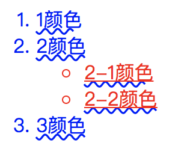

一听到张鑫旭发了一本书，名为《css选择器世界》。作为他《css世界》的读者，对他的这本新书一直念念不忘，直到今年上半年，才入手了这本新书。《css选择器世界》这本书篇幅少的让我有点意外，但是坚信“浓缩就是精华”的我，还是满怀期待地打开学习了。读完这本书后，内容都知道，但是可能一些巧妙的使用以及小的细节点是我以前所没有注意的。总之，这本书比较推荐给初中级的读者，如果你是一位css能力很棒的开发话，推荐你快速阅读即可。下面我只挑出一些常用的进行阐述。
1. 后代选择符 - 空格
选择后代中符合的元素来使用当前的CSS样式规则。
错误认识
1
2
3
4
5
6
7
8
9
10
11
12
13
14
15
16
17
18<style>
.fd-red p {
color: red;
}
.fd-blue p {
color: blue;
}
</style>
<div class="fd-red">
<div class="fd-blue">
<p>1颜色</p>
</div>
</div>
<div class="fd-blue">
<div class="fd-red">
<p>2颜色</p>
</div>
</div>当包含后代选择符的时候，整个选择器的优先级与祖先元素的DOM层级没有任何关系，这时需要看落地元素的优先级。上述案例中，落地元素是最后p元素，两个p元素彼此分离，没有嵌套关系，DOM层级平行，没有先后；再看选择器优先级：
.fd-red p与.fd-blue p是一个类选择器(10) + 标签选择器(1)，选择器优先级的计算值也是一样的。这时就需要看在CSS文件中的位置，后面的比前面的优先。1
2:not(.fd-red) p {color: blue;}
.fd-red p {color: red;}:not()本身的优先级为0
1
2.fd-blue.fd-blue p {color: blue;}
.fd-red p {color: red;}
JS中后端选择符错误认识
1
2
3
4
5
6
7
8
9
10<div class="fd-wrap">
<div class="fd-first">第一</div>
<div class="fd-outer">
<div class="fd-inner">内外开花</div>
</div>
</div>
<script>
var len1 = document.querySelectorAll('.fd-wrap div div').length;
var len2 = document.querySelector('.fd-wrap').querySelectorAll('div div').length;
</script>CSS选择器是独立于整个页面的
想修改querySelectorAll后面的选择器不是全局匹配，可以使用:scope伪类，其作用就是让CSS选择器的作用域局限在某一范围内。
1
document.querySelector('.fd-wrap').querySelectorAll(':scope div div').length;
2. 子选择符 - 箭头>
子选择器只会匹配第一代子元素。后代选择器会匹配所有子元素。
1 | <style> |

子选择器的匹配性能优于后代选择器，但是性能优势的价值有限。（当没有达到一定量级的时候，此优势不能作为选择符技术选型的优先条件）
使用子选择符的主要目的是避免冲突。
- 适合子选择符的场景
- 状态类名控制
- 标签受限
- 层级位置与动态判断
子选择符通过限制关系使得结构更加稳固，但同时也失去了弹性和变化，需要慎重使用。
3. 相邻兄弟选择符 - 加号+
用于选择相邻的兄弟元素，但只能选择后面一个兄弟。
1 | <style> |
.fd-li + li选择的是.fd-li元素后面一个相邻且标签是li的元素。
文本节点与相邻兄弟选择符
1
2
3
4
5
6
7
8
9
10
11
12<style>
.fd-li + li {
color: red;
}
</style>
<ol>
<li>颜色</li>
<li class="fd-li">颜色</li>
这是一段文本节点，间隔开li
<li>颜色</li>
<li>颜色</li>
</ol>兄弟选择符忽略文本节点
注释节点与相邻兄弟选择符
1
2
3
4
5
6
7
8
9
10
11
12<style>
.fd-li + li {
color: red;
}
</style>
<ol>
<li>颜色</li>
<li class="fd-li">颜色</li>
<!-- 这是一段注释节点，间隔开li -->
<li>颜色</li>
<li>颜色</li>
</ol>兄弟选择符忽略注释节点
:first-child效果
1
.fd-li:not(:first-child) {color: blue;}
使用相邻兄弟选择符实现
1
.fd-li + .fd-li {color: blue;}
4. 随后兄弟选择符 - 波浪号~
随后兄弟选择符会匹配后面的所有兄弟元素，而相邻兄弟选择符只会匹配后面的第一个兄弟元素。
1 | <style> |
随后兄弟选择符与相邻兄弟选择符一致，会忽略文本节点与注释节点
5. 列选择符 - 双管道||
列选择器，目前浏览器的兼容性还不能让其在实际项目中得到应用。
table布局和grid布局中有列的概念。如果想要控制列的样式，有两种方案：
1. 借助:nth-col()或者:nth-last-col()伪类，目前浏览器还未支持这两个伪类；
2. 借助原生table布局中的colgroup和col原生来实现
1 | // 属于的含义。选择所有属于col.fd-col-demo的td元素，哪怕这个td元素横跨多列。 |
为何没有前面兄弟选择符或者父元素选择符
1 | 浏览器解析HTML文档是从前往后，由外及里进行，所以页面总是先出现头部再出现主体内容的。 |
如何实现前面兄弟选择符效果
1 | 兄弟选择符只能选择后面元素，其中“后面”仅仅指代码层面的后面，而不是视觉层面的后面。如果实现“前面兄弟选择符”效果，可以把“前面元素”的相关代码依然放在后面，但是视觉上将它呈现在前面。 |
- flex布局
- float浮动
- absolute绝对定位
元素属性选择器
元素选择器包含两类：标签选择器、通配符选择器。
属性选择器：id选择器、类选择器、属性值选择器。
1. 元素选择器
元素选择器是唯一不能重复自身的选择器
由于元素选择器不能重复自身来提高优先级，可以通过其他方法来提高优先级：
- 借助html、body标签来提高优先级
body foo {} - 借助:not()伪类，括号里是任意其他不一样的标签名即可：
p:not(a) {}
- 借助html、body标签来提高优先级
级联使用的时候元素选择器必须写在最前面
特殊标签选择器：通配符选择器
2. 属性选择器
属性选择器：元素上的属性、以及属性值
[attr] 匹配包含指定的属性元素
1
[disabled] {}
[attr=’value’] 属性值完全匹配选择器
1
[type='radio']{}
[attr~=’value’] 属性值单词完全匹配选择器
1
2
3
4<style>
[rel~='nofllow'] {}
</style>
<a rel="nofllow noopener">链接</a>
[attr|=’value’] 属性值其实片段完全匹配选择器，表示具有attr属性的元素，其值要么正好是val，要么以val外加短横线-开头，|=用于连接需要匹配的属性和属性内容
1
2
3
4
5
6
7
8
9
10
11
12
13
14
15
16
17
18
19
20
21<style>
.fd-div[mytype] {
background-color: hotpink;
}
.fd-div[mytype='test'] {
background-color: khaki;
}
.fd-div[data-align~='top'] {
background-color: lightseagreen;
}
.fd-div[class|='fd-button'] {
background-color: lightsteelblue;
}
</style>
<body>
<div class="fd-div" mytype>[attr]</div>
<div class="fd-div" mytype='test'>[attr='val']</div>
<div class="fd-div" data-align="top left">[attr~='val']</div>
<div class="fd-button-sure fd-div">[attr|='val']</div>
<div class="fd-div fd-button-cancel">[attr|='val']</div>
</body>
[attr^=’val’] 匹配attr属性值以字符val开头元素
[attr$=’val’] 匹配attr属性值以字符val结尾元素
[attr*=’val’] 匹配attr属性值包含字符val的元素
忽略大小写的正则匹配运算符：[attr~=’val’ i]
搜索过滤技术
利用[data-city-name*=’cityname’]
树结构伪类
1. :root
表示的就是html元素
1 | :root.fd-page {background-color: red;} |
由于:root只兼容IE9+，因此一般会作为IE8、IE9浏览器兼容hack
2. :empty
匹配空标签元素
1 | <style> |
如果元素中含有空格、换行，则:empty不会对其进行匹配。
::after、::before伪元素不会影响到:empty伪类的匹配。
应用
隐藏空元素
字段缺失
1
2
3
4
5
6
7
8
9
10
11
12
13
14
15
16
17
18
19
20
21
22
23
24
25
26
27
28
29
30
31
32
33
34
35
36<style>
.fd-form-item {
position: relative;
padding-left: 80px;
color: lightgreen;
font-size: 16px;
line-height: 25px;
}
.fd-form-label {
position: absolute;
top: 0;
left: 0;
width: 80px;
text-align: right;
color: #333;
}
.fd-form-val {
display: inline-block;
min-width: 200px;
height: 100%;
}
.fd-form-val:empty::before {
content: '暂无';
color: red;
}
</style>
<div class="fd-form">
<div class="fd-form-item">
<label class="fd-form-label">姓名：</label>
<span class="fd-form-val">赵士娟</span>
</div>
<div class="fd-form-item">
<label class="fd-form-label">地址：</label>
<span class="fd-form-val"></span>
</div>
</div>
3. 子索引伪类
:first-child、:last-child
1
2
3
4
5
6
7
8
9
10<style>
.fd-child:first-child {
color: red;
}
</style>
<div class="fd-parent">
<p>1</p>
<li class="fd-child">2</li>
<li class="fd-child">3</li>
</div>匹配满足：是第一个/最后一个元素同时选择器也匹配的
:only-child
匹配没有任何兄弟元素的元素，忽略前后文本内容。
:nth-child、:nth-last-child
关键字形式：odd/even表示奇数个/偶数个
函数符号形式：An+B【n从0开始】
odd = 2n + 1，even = 2n
:nth-child(-n + 3)表示匹配前三个元素
:nth-child(n + 4):nth-child(-n + 10)表示匹配第4-10个元素
应用
4. 匹配类型的子索引伪类
匹配类型的子索引伪类是在同级列表中相同标签元素之间进行的索引与解析。
:first-of-type、:last-of-type
匹配同一类型元素的第一个、同一类型元素的最后一个
1
2
3
4
5
6
7
8
9
10
11
12
13
14<style>
.fd-content > :first-of-type {
color: red;
}
.fd-content > :last-of-type {
color: green;
}
</style>
<div class="fd-content">
<header class="fd-head">标题1</header>
<p class="fd-section">段落1</p>
<header class="fd-head">标题2</header>
<p class="fd-section">段落2</p>
</div>
:only-of-type
匹配唯一标签类型的元素。匹配:only-child的元素一定匹配:only-of-type，但是匹配:only-of-type的元素不一定匹配:only-child。
1
2
3
4
5
6
7
8
9
10
11
12<style>
.fd-content-only > :only-of-type {
color: red;
}
</style>
<div class="fd-content-only">
<header class="fd-head">标题1</header>
<p class="fd-section">段落1</p>
<header class="fd-head">标题2</header>
<p class="fd-section">段落2</p>
<section>我是内容主题</section>
</div>
:nth-of-type、:nth-last-of-type
匹配指定索引的当前标签类型元素。
与:nth-child一样，也有关键字形式【even/odd】、函数符号形式【An+B】
1
2
3
4
5
6
7
8
9
10
11
12<style>
.fd-content-nth > .fd-section:nth-of-type(2n) {
color: green;
}
</style>
<div class="fd-content-nth">
<header class="fd-head">标题1</header>
<p class="fd-section">段落1</p>
<header class="fd-head">标题2</header>
<p class="fd-section">段落2</p>
<section>我是内容主题</section>
</div>
逻辑组合伪类
1. 否定伪类:not()
如果当前元素与括号中选择器不匹配，则伪类会进行匹配。
1 | <style> |
:not()伪类优先级为0
1
2/* 优先级就是p选择器优先级 */
:not(p){}:not()伪类可以不断级联
1
input:not(:disabled):not(:read-only){}
:not()伪类目前尚未支持多个表达式，也不支持出现选择符
1
2
3
4/* 不支持 */
input:not(:disabled:read-only) {}
input:not([id][title]) {}
input:not(p:read-only) {}
2. 任意匹配伪类:is()
:is()伪类可以把括号中的选择器依次分配出去，对于复杂的有很多逗号分隔的选择器非常有用。
:is()伪类本身优先级为0，整个选择器优先级由伪类里面参数优先级最高的那个选择器决定。比如：
1 | /* 优先级等同于.fd-active p */ |
:is()伪类的作用：简化选择器
1 | .fd-a > span, |
等同于下面：
1 | :is(.fd-a, .fd-b, .fd-c, .fd-d) > span {color: red;} |
3. 任意匹配伪类:where()
:where()伪类和:is()伪类的含义、语法、作用一模一样，唯一区别就是优先级不一样。
:where()伪类的优先级永远是0，比如：
1 | /* 优先级等同于 p */ |
4. 关联伪类:has()
目前没有浏览器支持
如果此伪类得到实现，就可以实现类似父选择器、前面兄弟选择器的功能。
1 | /* 匹配所有包含img标签元素的a元素 */ |